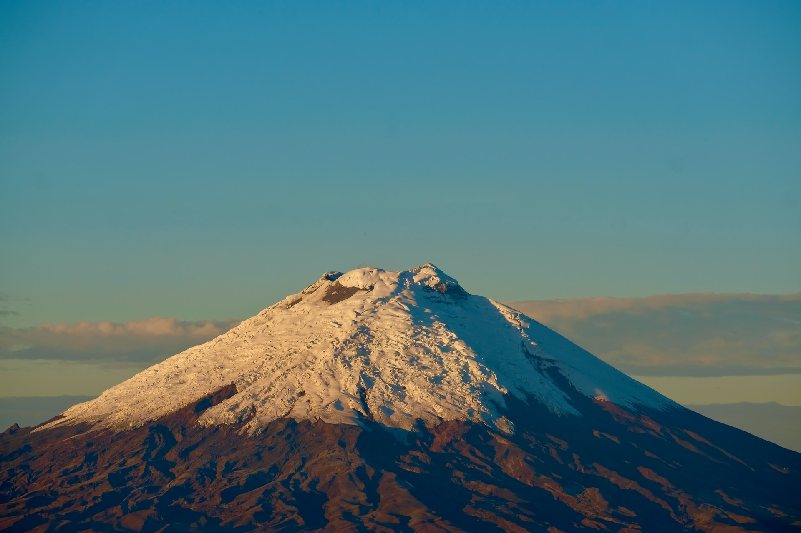

COTOPAXI ES UN TOPÓNIMO ECUATORIANO
QUE EN LENGUA LOCAL
SIGNIFICA "CUELLO DE LA LUNA"

Actividades
Fotografía
Senderismo
Paseo en bicicleta
Campamento
Fotografía
Senderismo
Paseo en bicicleta
Campamento
| Nombre | Cotopaxi |
|---|---|
| Coordenadas | 0,683º S; 78,436º W |
| Altura | 5897 m snm |
| Diámetro | 20 km |
| Tipo de volcán | Estrato volcán compuesto |
| Última erupción | 2015 hasta el presente |
| Estado | Activo |
| Actividad reciente | Actividad fumarólica |
| Monitoreo | Sísmicidad, deformación, aguas termales, desgasificación |